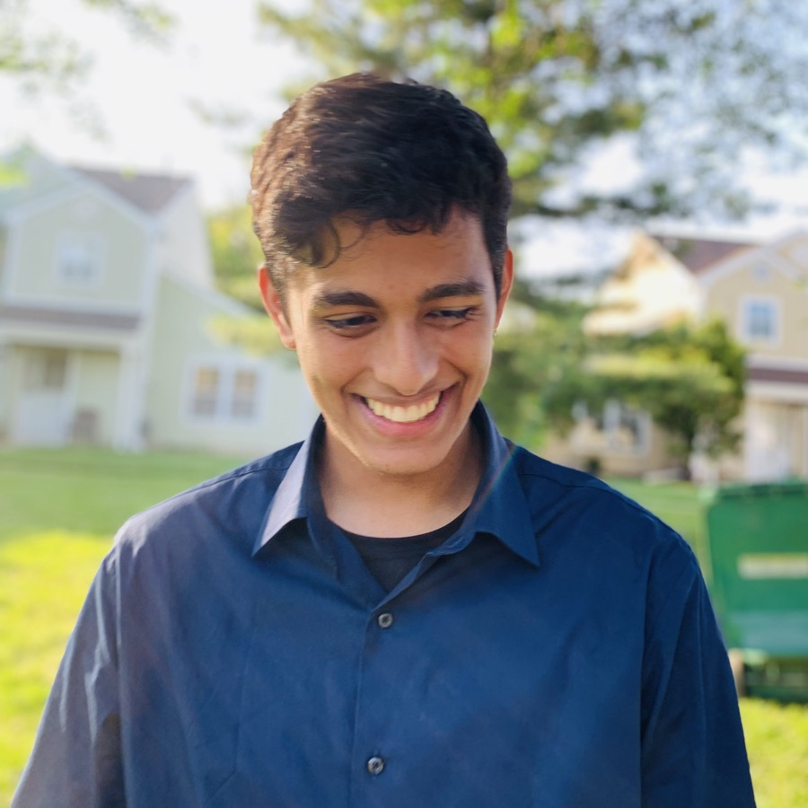
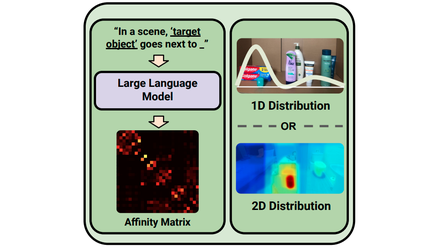
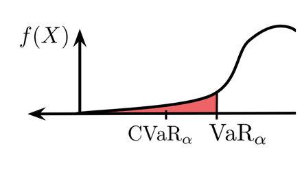

Satvik Sharma
I'm a 2nd year PhD at Stanford AI Lab, co-advised by Jeannette Bohg and Dorsa Sadigh. My research focuses on dexterous manipulation and on incorporating foundation models into manipulation policies. Before Stanford, I was at Berkeley Artificial Intelligence Research (BAIR) where I was advised by Prof. Ken Goldberg. I did my bachelors degree at Berkeley in CS.

Selected Publications
MemER: Scaling Up Memory for Robot Control via Experience Retrieval
International Conference on Learning Representations (ICLR), 2026
Language Embedded Radiance Fields for Zero-Shot Task-Oriented Grasping
Conference on Robot Learning (CoRL), 2023 - Best Paper Finalist

Open-World Semantic Mechanical Search with Large Vision and Language Models
Conference on Robot Learning (CoRL), 2023
Fleet-DAgger: Interactive Robot Fleet Learning with Scalable Human Supervision
Conference on Robot Learning (CoRL), 2022 - Oral Presentation

Policy Gradient Bayesian Robust Optimization for Imitation Learning
International Conference on Machine Learning (ICML), 2021